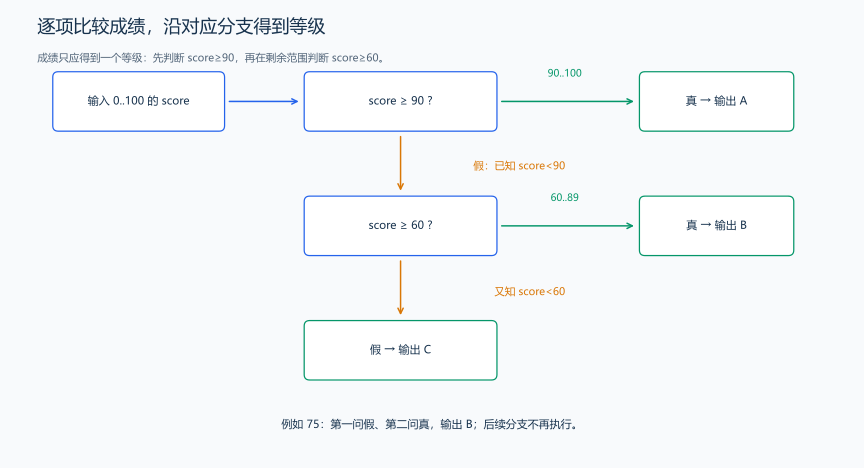
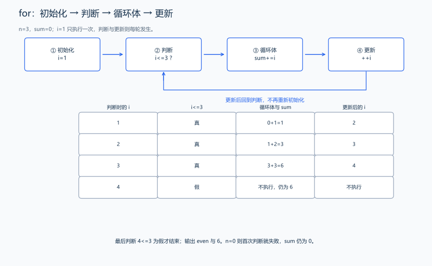
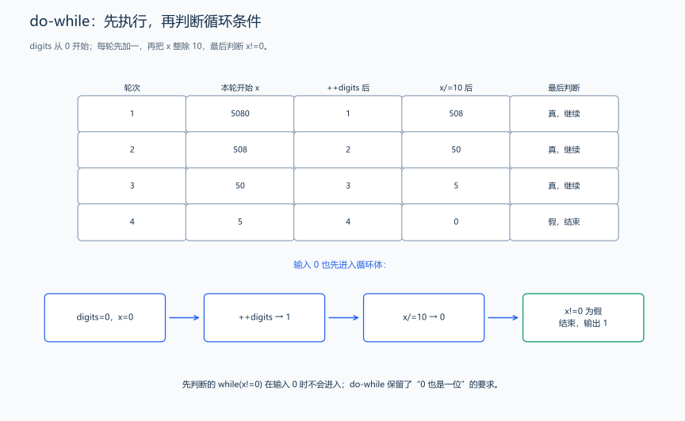
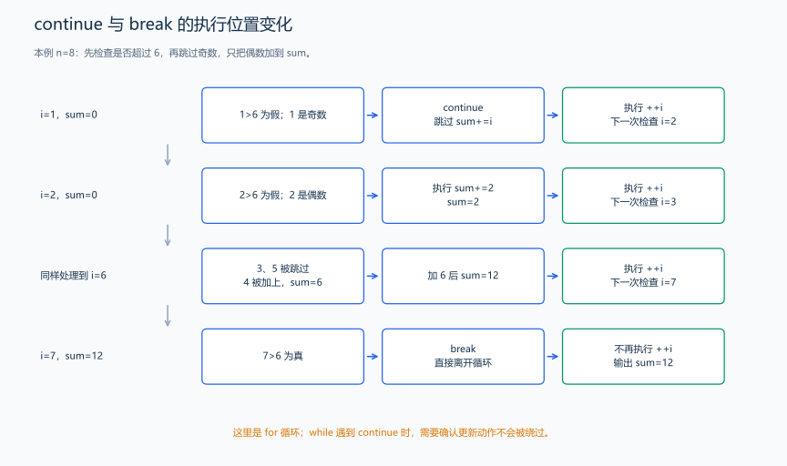
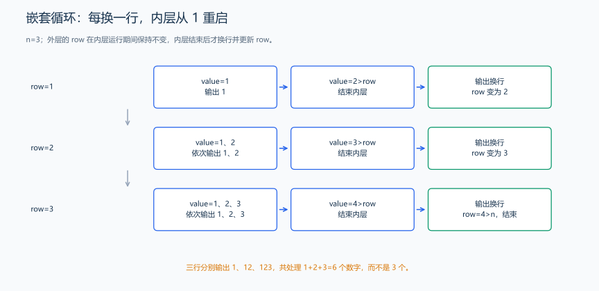

（五） 条件与循环
“成绩达到 60 就及格”“把 1 到 n 加起来”分别需要选择和重复。先列出可能的执行路径，再对照代码；循环最容易错的地方是边界、更新时机和什么时候退出。
1. if、else if 与 else：选择恰好一条路径
题目原文（自拟）： 输入 0<=score<=100。成绩至少 90 输出 A；否则至少 60 输出 B；其余输出 C。
推导： 先判断最高等级。如果没达到 90，再判断 60；这一支不必再写小于 90，因为前面已经排除了它。else 处理剩余情况。独立写两个 if 可能让 95 同时进入两个条件，不能表达“只输出一个等级”。

#include <iostream>
using namespace std;
int main() {
int score;
cin >> score;
if (score >= 90) {
cout << "A\n"; // 达到最高等级，不再执行后面的 else if。
} else if (score >= 60) {
cout << "B\n"; // 已知 score<90，所以此分支是 [60,90)。
} else {
cout << "C\n"; // 前两支均失败，score<60。
}
}输入 75，输出 B。用 59、60、89、90 检查两处分界。花括号内可以有多条语句；即使只有一条，也可保留花括号，降低后来添加语句时写错范围的机会。else 关联最近一个尚未匹配的 if，嵌套判断用缩进和花括号标清。
2. switch：按离散的值选择动作
如果不是比较范围，而是根据一个整数编号选择菜单，可以使用 switch。下面是完整的固定数据演示：day=2，输出 Tue。
#include <iostream>
using namespace std;
int main() {
int day = 2;
switch (day) { // 本例按整数值选择分支。
case 1:
cout << "Mon\n";
break; // 离开 switch，避免继续执行后面的 case。
case 2:
cout << "Tue\n";
break;
default:
cout << "other\n"; // 没有 case 匹配时进入这里。
break;
}
}case 后通常写互不重复的整数常量，switch 可用于整数或枚举值，不直接按 double 的区间选择。没有 break 时可能继续执行后面标签的语句，这叫贯穿；分支标签不会自动帮我们退出。两个 case 可以共用同一段语句，但要明确是有意分组。
3. for：初始化、判断、执行、更新
题目原文（自拟）： 输入 0<=n<=1000000，求 1 到 n 的和，先输出和的奇偶文字 even 或 odd，下一行输出和。n=0 时和为 0。
推导： sum 先为 0，i 从 1 开始。每轮先判断 i<=n，成立才加当前 i；加完才执行 ++i，然后回到判断。最后一次加 n 后 i 变成 n+1，条件失败结束。

#include <iostream>
using namespace std;
int main() {
int n;
cin >> n;
long long sum = 0; // 最坏和约为 5×10^11，用 long long 保存。
for (int i = 1; i <= n; ++i) {
sum += i; // 循环结束前，sum 等于 1 到当前 i 的和。
}
if (sum % 2 == 0) {
cout << "even\n";
} else {
cout << "odd\n";
}
cout << sum << '\n';
}输入 3，输出：
even
6| 检查时 i | 条件 | 本轮动作 | 动作后的 sum |
|---|---|---|---|
| 1 | 真 | 加 1，再令 i=2 | 1 |
| 2 | 真 | 加 2，再令 i=3 | 3 |
| 3 | 真 | 加 3，再令 i=4 | 6 |
| 4 | 假 | 不执行循环体 | 6 |
初始化只做一次，条件在每轮之前检查；n=0 时首次判断为假，循环体执行零次。求 1 到 n 的和，用 i=1、i<=n；访问 n 项数组，用 i=0、i<n，下标依次为 0…n-1。起点和条件随任务改变。循环中的 i 只在这个 for 的范围里可见。
4. while 与 do-while：重复次数由状态决定
while 先判断条件，可能零次执行；do-while 先执行一次再判断，末尾需要分号。比如统计非负整数的十进制位数，0 也应算一位，适合先处理一次。
题目原文（自拟）： 输入 \(0\le x\le10^{18}\)，输出 x 的十进制位数。
推导： 每次除以 10 去掉一位，同时计数加一；当剩余数为 0 时停止。使用 do-while，输入 0 也会经历一轮，得到 1。
#include <iostream>
using namespace std;
int main() {
long long x;
cin >> x;
int digits = 0;
do {
++digits; // 当前至少存在一位，包括输入 0 的情况。
x /= 10; // 整数除法去掉末尾一位。
} while (x != 0); // do-while 在这里检查，末尾保留分号。
cout << digits << '\n';
}
输入 5080，输出 4。剩余数依次为 5080→508→50→5→0，恰好处理四轮。若写成先判断 x!=0 的 while，输入 0 会得到零次，需要另外处理。
题目有结束标记时，可把“本次成功读到数且它不是结束标记”作为 while 条件。例如 while(cin>>x && x!=0) 先读，成功后再判断数值；题面规定的 0 与 EOF 是不同的结束方式。先写清什么是一组输入，再选循环条件。
5. break 与 continue 的控制流
题目原文（自拟）： 输入 0<=n<=20，按从 1 到 n 的顺序检查整数，只累加偶数；一旦遇到大于 6 的数就结束，不再处理后面的数。输出累计和。

#include <iostream>
using namespace std;
int main() {
int n;
cin >> n;
int sum = 0;
for (int i = 1; i <= n; ++i) {
if (i > 6) {
break; // 直接离开本层循环，不再执行 ++i。
}
if (i % 2 != 0) {
continue; // 跳过本轮剩余语句，但仍执行 for 的 ++i。
}
sum += i; // 只有 i 为偶数且不大于 6 才能到达这里。
}
cout << sum << '\n';
}输入 8，输出 12：1、3、5 跳过，2、4、6 累加，7 触发退出。break 只退出最内层循环或 switch，不能直接退出所有层；continue 在 while 中回到条件检查，不会自动执行我们写在循环体末尾的更新，更新被跳过可能导致死循环。for 的 continue 行为见 C++17 草案：for 语句。
6. 嵌套循环：内层完整执行后，外层才前进
题目原文（自拟）： 输入 1<=n<=9，输出 n 行数字，第 i 行输出从 1 到 i 的数字，中间没有空格。
#include <iostream>
using namespace std;
int main() {
int n;
cin >> n;
for (int row = 1; row <= n; ++row) {
for (int value = 1; value <= row; ++value) {
cout << value; // 这一行的所有 value 输出完，内层才结束。
}
cout << '\n'; // 换行属于外层，每行恰好执行一次。
}
}输入 3，输出：
1
12
123
实际访问顺序为 (row,value)=(1,1)→(2,1)→(2,2)→(3,1)→(3,2)→(3,3)。每次外层进入新行，内层都重新从 1 开始。总输出项数为 \(1+2+\cdots+n\)，不是只做 n 次；复杂度章节会继续用这种计数推导增长。
练习题： 洛谷 P5712 — Apples（条件输出）；洛谷 P5721 — 数字直角三角形（嵌套循环，格式可结合输出格式章节）；洛谷 P5723 — 质数口袋（学完质数判断后练习循环和提前退出）。
能按顺序处理值以后，下一节让程序保存一整批值，并用循环访问它们的位置。